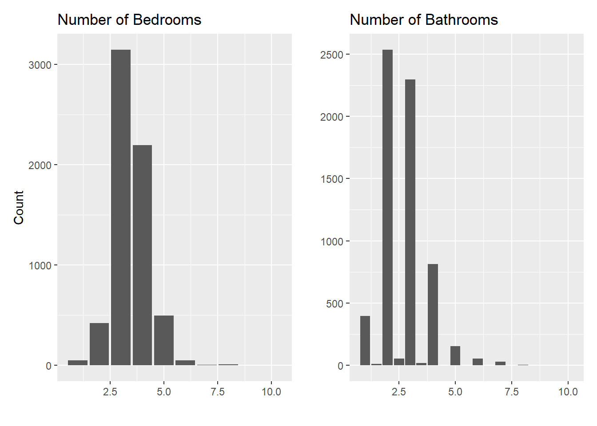

Code
library(tidyverse)
library(tidymodels)
library(kableExtra)
library(patchwork)
zillow_data <- read_csv("data.csv")library(tidyverse)
library(tidymodels)
library(kableExtra)
library(patchwork)
zillow_data <- read_csv("data.csv")With the ongoing housing crisis within the United States, identifying homes that land within the budget of families looking to buy can be a small help in the larger economic problem. Here, I’ll aim to identify the features of homes that best predicts where they land on a range of prices. I’ll be using a data set derived from zillow centered on Austin, TX and a few nearby cities as a microcosm of the larger housing market.
set.seed(0409)
zillow_splits <- initial_split(zillow_data, 0.85, strata = priceRange)
train <- training(zillow_splits)
test <- testing(zillow_splits)
train |>
head() |>
kbl() |>
kable_styling(bootstrap_options = "striped") |>
scroll_box(height = "300px")| id | city | description | homeType | latitude | longitude | garageSpaces | hasSpa | yearBuilt | numOfPatioAndPorchFeatures | lotSizeSqFt | avgSchoolRating | MedianStudentsPerTeacher | numOfBathrooms | numOfBedrooms | priceRange |
|---|---|---|---|---|---|---|---|---|---|---|---|---|---|---|---|
| 3 | austin | HIGH RENTABLE AREA! Beautifully kept duplex located minutes away from great restaurants, shopping, and easy access to I-35 and HWY 183! Each unit features 3 bed 2 bath with an amazing floor plan! | Multiple Occupancy | 30.32740 | -97.69390 | 1 | FALSE | 1967 | 0 | 8886 | 3.333333 | 15 | 4 | 6 | 0-250000 |
| 6 | austin | Under market pricing!!! Owner wants to move it quickly! He is willing to go well under market value for December contract! This 3 bedroom condo is located right off Payton Gin Rd about 1/2 mile from 183. It's part of the well sought after Orange Grove Condominium community. It is close to MoPac/I 35 and the Domain Shopping area. Recently upgraded with newer paint, laminate and vinyl flooring. Recent carpet replaced in the Master Bedroom and the hall/stairs as well. | Condo | 30.36236 | -97.71042 | 0 | FALSE | 1974 | 0 | 400 | 4.000000 | 14 | 2 | 3 | 0-250000 |
| 8 | austin | 11612 Murron Dr, Austin, TX 78754 is a single family home that contains 2,638 sq ft and was built in 2013. It contains 4 bedrooms and 3 bathrooms. | Single Family | 30.35560 | -97.61843 | 0 | FALSE | 2013 | 0 | 6011 | 5.000000 | 11 | 3 | 4 | 0-250000 |
| 11 | austin | 10425 Garbacz Dr, Austin, TX 78748 is a single family home that contains 1,640 sq ft and was built in 2001. It contains 4 bedrooms and 2 bathrooms. | Single Family | 30.16116 | -97.82455 | 0 | FALSE | 2001 | 0 | 5662 | 5.000000 | 15 | 2 | 4 | 0-250000 |
| 12 | austin | Back on Market with BRAND NEW ROOF & new vanity, mirror and tile in hall bath 7/18. Updates in June of 2018 includes: GRANITE COUNTER TOPS, tile back splash, STAINLESS appliances, new sink and garbage disposal. Fresh interior and exterior paint. Porcelain wood looking tile in common areas and no carpet. New front door and garage door! Backs to easement so no neighbors behind it. There is a bonus/4th room connected to the master that would make a great home office, flex room or nursery. MOVE IN READY! | Single Family | 30.25203 | -97.58260 | 0 | FALSE | 2003 | 0 | 5749 | 2.666667 | 13 | 2 | 3 | 0-250000 |
| 27 | austin | Beautiful 2-story in desirable Avery Ranch neighborhood.Spacious floor plan includes:3 living, 2 dining, vaulted ceilings, new carpet, engineered Wood. Kitchen features granite counters, lots of storage, center island & opens to family room. Primary bed w/double vanity, garden tub+separate shower & walk-in closet. Bright bonus room up great for media/game/office space. Gorgeous fenced backyard w/covered patio, large fire pit area + storage shed. Neighborhood amenities: pool, tennis court, park & trails. | Single Family | 30.49611 | -97.79453 | 2 | FALSE | 2006 | 1 | 7971 | 8.333333 | 16 | 3 | 3 | 0-250000 |
The initial data set featured 7498 observations with 16 total variables. It was split in two sections: 6371 observations for training data and 1127 observations for testing the eventual model with a strata created to ensure that different price ranges were proportionally represented between the two sets.
Since the value of focus is the price range of each observation, let’s take a look at how prices are distributed across the data set:
train |>
ggplot() +
geom_bar(aes(x = priceRange, fill = priceRange, color = I("#000001"))) +
labs(title = "Distribution of Price Range",
x = "Price Range",
y = "Count") +
guides(fill = "none")
train |>
count(priceRange) |>
kbl() |>
kable_styling(bootstrap_options = "striped")| priceRange | n |
|---|---|
| 0-250000 | 795 |
| 250000-350000 | 1501 |
| 350000-450000 | 1466 |
| 450000-650000 | 1450 |
| 650000+ | 1159 |
The given ranges are largely even, only varied by <100 observations, apart from the first group of 0-250,000 (12.48% of the data) and the final 650,000+ (18.19%).
city_plot <- train |>
ggplot() +
geom_bar(aes(y = city)) +
labs(
title = "City",
x = "",
y = "Count"
)
type_plot <- train |>
ggplot() +
geom_bar(aes(y = homeType)) +
labs(
title = "Home Type",
x = "",
y = ""
)
spa_plot <- train |>
ggplot() +
geom_bar(aes(x = hasSpa)) +
labs(
title = "House Has Spa?",
x = "",
y = "Count"
)
garage_plot <- train |>
ggplot() +
geom_bar(aes(x = garageSpaces)) +
labs(
title = "Number of Garage Spaces",
x = "",
y = "Count"
)
patio_plot <- train |>
ggplot() +
geom_bar(aes(x = numOfPatioAndPorchFeatures)) +
labs(
title = "Number of Patio and Porch Features",
x = "",
y = ""
)
bathroom_plot <- train |>
ggplot() +
geom_bar(aes(x = numOfBathrooms)) +
labs(
title = "Number of Bathrooms",
x = "",
y = ""
)
bedroom_plot <- train |>
ggplot() +
geom_bar(aes(x = numOfBedrooms)) +
labs(
title = "Number of Bedrooms",
x = "",
y = "Count"
)
students_plot <- train |>
ggplot() +
geom_bar(aes(x = MedianStudentsPerTeacher)) +
labs(
title = "Median Students Per Teacher",
x = "",
y = "Count"
)(city_plot +
type_plot)
train |>
count(city) |>
kbl(caption = "Cities") |>
kable_styling(bootstrap_options = "striped", full_width = F, position = "float_left")| city | n |
|---|---|
| austin | 6298 |
| del valle | 42 |
| driftwood | 6 |
| dripping springs | 1 |
| manchaca | 2 |
| pflugerville | 21 |
| west lake hills | 1 |
train |>
count(homeType) |>
kbl(caption = "Home Types") |>
kable_styling(bootstrap_options = "striped", full_width = F, position = "float_right")| homeType | n |
|---|---|
| Apartment | 11 |
| Condo | 229 |
| Mobile / Manufactured | 7 |
| MultiFamily | 3 |
| Multiple Occupancy | 41 |
| Residential | 18 |
| Single Family | 5984 |
| Townhouse | 76 |
| Vacant Land | 2 |
By a wide margin, homes in Austin, TX and Single Family homes are the most common throughout the dataset to the point that some of the other instances are barely visible at this scale. For the runner-ups, the second most common city is Del Valle (verified by taking a peek at the count), and the second most common home type is a condo.
(bedroom_plot +
bathroom_plot)
I looked at bedrooms and bathrooms next since those are common figures used when briefly describing homes (e.g. a 2 bed, 1 bath)
For bedrooms, the most common number is 3 followed by 4 in a normal-looking distribution. Bathrooms have more of a right-tailed distribution but also have the quirk of including half-baths i.e. bathrooms with just a toilet and sink, lacking a shower and/or bath. The most common configurations are 2 and 3 bathrooms with the inclusion of half baths being far less common.
spa_plottrain |>
count(hasSpa) |>
kbl() |>
kable_styling(full_width = F, bootstrap_options = "striped")| hasSpa | n |
|---|---|
| FALSE | 5857 |
| TRUE | 514 |
Out of all observations, the vast majority (~92%) lack spas. As a luxury addition to a home, it’s not surprising that these are relatively rare within the data.
(garage_plot /
patio_plot) 
train |>
count(garageSpaces) |>
kbl() |>
kable_styling(bootstrap_options = "striped", full_width = F) |>
scroll_box(height = "200px")| garageSpaces | n |
|---|---|
| 0 | 2834 |
| 1 | 479 |
| 2 | 2353 |
| 3 | 404 |
| 4 | 219 |
| 5 | 28 |
| 6 | 35 |
| 7 | 3 |
| 8 | 7 |
| 9 | 1 |
| 10 | 5 |
| 12 | 2 |
| 22 | 1 |
The most common amount for both garage spaces and patio/porch features is 0. However, over 2000 houses within the sample have 2 garage spaces, much more common than 1 space or 3 spaces. It makes sense that this is a common construction decision since many households have at least two drivers (e.g. two parents, parent and child, roommates, etc.). One space may not provide enough room to be worth the garage, and three spaces might require too much space that could be allocated to different parts of the house.
The second most common number of patio/porch features is 1, and more features are increasingly less common i.e. 2 features are more common than 3 features which is less common than 4. Patio and porch features are likely also a luxury addition that could signify an increase to the house’s price.
students_plottrain |>
count(MedianStudentsPerTeacher) |>
kbl() |>
kable_styling(bootstrap_options = "striped")| MedianStudentsPerTeacher | n |
|---|---|
| 10 | 17 |
| 11 | 272 |
| 12 | 368 |
| 13 | 683 |
| 14 | 1374 |
| 15 | 966 |
| 16 | 1600 |
| 17 | 793 |
| 18 | 295 |
| 19 | 3 |
In terms of median students per teacher in the area, 16 is the most common number (~1/4 of the data). Most of the data lies below this most common value (~58%) rather than being above it (~17%).
year_plot <- train |>
ggplot() +
geom_histogram(aes(x = yearBuilt)) +
geom_boxplot(aes(x = yearBuilt, y = -40), width = 40) +
labs(
title = "Year Built",
x = "",
y = "Count"
)
school_plot <- train |>
ggplot() +
geom_histogram(aes(x = avgSchoolRating)) +
geom_boxplot(aes(x = avgSchoolRating, y = -40), width = 40) +
labs(
title = "Average School Rating",
x = "",
y = "Count"
)
funkylot_plot <- train |>
ggplot() +
geom_histogram(aes(x = lotSizeSqFt)) +
geom_boxplot(aes(x = lotSizeSqFt, y = -40), width = 40) +
labs(
title = "Lot Size (sq ft)",
x = "",
y = "Count"
)
lot_plot <- train |>
ggplot() +
geom_histogram(aes(x = lotSizeSqFt)) +
geom_boxplot(aes(x = lotSizeSqFt, y = -40), width = 40) +
scale_x_log10() +
labs(
title = "Lot Size (sq ft)",
x = "",
y = "Count"
)year_plot
train |>
select(yearBuilt) |>
quantile(na.rm = TRUE) |>
kbl(caption = "Year Built Stats") |>
kable_styling(bootstrap_options = "striped", full_width = F)| x | |
|---|---|
| 0% | 1907 |
| 25% | 1975 |
| 50% | 1993 |
| 75% | 2006 |
| 100% | 2020 |
All observations in the data set were built between the years 1907 and 2020. The median year was 1993 with an interquartile range of 31, so half the homes were built between 1975 and 2006. The data is left-skewed as a whole, with a long range of older dates past the median.
school_plot train |>
select(avgSchoolRating) |>
quantile(na.rm = TRUE) |>
kbl(caption = "School Rating Stats") |>
kable_styling(bootstrap_options = "striped", full_width = F)| x | |
|---|---|
| 0% | 2.333333 |
| 25% | 4.000000 |
| 50% | 5.666667 |
| 75% | 7.000000 |
| 100% | 9.500000 |
Schools seemed to be rated on a scale, likely from 1 to 10 since these observations start at 2.3 and end at 9.5. The median of the data is 5.6, with half the observations falling between 4 and 7.
(funkylot_plot +
lot_plot)
train |>
select(lotSizeSqFt) |>
quantile(na.rm = TRUE) |>
kbl(caption = "Lot Size Stats") |>
kable_styling(bootstrap_options = "striped", full_width = F)| x | |
|---|---|
| 0% | 100 |
| 25% | 6534 |
| 50% | 8215 |
| 75% | 10890 |
| 100% | 34154525 |
When first trying to observe the data, it was clear that the few largest instances were obscuring the rest of the data, so I applied scaling to get a better picture of the lot size distribution. The smallest lot size is 100 sq ft and the largest is over 30 million. The data is in an even-looking distribution with a median of 8215 sq ft, the majority of instances resting between 6534 sq ft and 10,890 sq ft.
city_price <- train |>
ggplot() +
geom_bar(aes(y = city, fill = priceRange, color = I("#000001")), position = "fill") +
labs(title = "City and Price Range",
y = "City",
x = "Count") +
theme(legend.position = "none")
type_price <- train |>
ggplot() +
geom_bar(aes(y = homeType, fill = priceRange, color = I("#000001")), position = "fill") +
labs(title = "Home Type and Price Range",
y = "Home Type",
x = "Count")
spa_price <- train |>
ggplot() +
geom_bar(aes(x = hasSpa, fill = priceRange, color = I("#000001")), position = "fill") +
labs(title = "Spa Prescence and Price Range",
x = "Has Spa?",
y = "Count")
garage_price <- train |>
ggplot() +
geom_bar(aes(x = garageSpaces, fill = priceRange, color = I("#000001")), position = "fill") +
labs(title = "Garage Spaces and Price Range",
x = "Number of Garage Spaces",
y = "Count")
patio_price <- train |>
ggplot() +
geom_bar(aes(x = numOfPatioAndPorchFeatures, fill = priceRange, color = I("#000001")), position = "fill") +
labs(title = "Patio & Porch Features and Price Range",
x = "# of Patio & Porch Features",
y = "Count")
bath_price <- train |>
ggplot() +
geom_bar(aes(x = numOfBathrooms, fill = priceRange, color = I("#000001")), position = "fill") +
labs(title = "Bathrooms and Price Range",
x = "Number of Bathrooms",
y = "Count")
bed_price <- train |>
ggplot() +
geom_bar(aes(x = numOfBedrooms, fill = priceRange, color = I("#000001")), position = "fill") +
labs(title = "Bedrooms and Price Range",
x = "Number of Bedrooms",
y = "Count") +
theme(legend.position = "none")
students_price <- train |>
ggplot() +
geom_bar(aes(x = MedianStudentsPerTeacher, fill = priceRange, color = I("#000001")), position = "fill") +
labs(title = "Median Students per Teacher and Price Range",
x = "Number of Students",
y = "Count")(city_price +
type_price)
Here, I’ve formatted the bars to allow a closer look at the distribution of price ranges within the variables with less observations.
For a few, like West Lake Hills, Manchaca, and Dripping Springs, the data are entirely within one price range. Others, like Pflungerville and Driftwood, are almost entirely made up of one price range, but contain a smaller proportion from another group. At first, this seems like a solid indicator that being in a certain city can strongly influence the price of a house, but we have to keep in mind that these were very small amounts of observations, with most having less than 10 houses. Because of that, city is probably not a reliable predictor of price on its own. To support this, Austin, with the largest amount of observations by far, has a distribution of prices that closely resembles the overall proportion of prices throughout the data set.
The different home types have a similar but less pronounced problem. Single family homes were by far the most common, and these also have a largely proportional distribution. There are two home types, vacant land and multifamily, that have only two price ranges within them. Residential and apartment home types have 4 out of the 5 groups present, and all the rest have all 5 represented. Like with cities, caution should be exercised when incorporating this variable into our predictions because of the small amount of observations, but the wider variation between signals to me that they are marginally more reliable.
(bed_price +
bath_price)
Both bedrooms and bathrooms seem to show an increase in price as they increase. At the lower end, there are more 1 and 2 bedroom houses within the lowest price range. At 4 bedrooms, there is a sharp increase in price range that’s carried up to 7 bedrooms. At the 8 bedroom mark, there is a comeback of the lower price ranges, although they take up a smaller portion of the total, and the 10 bedroom mark is entirely comprised of the 450,000-650,000 price range. Similar to the city and home type plots, this may be because of a smaller number of observations.
Bathrooms have a similar trend where a larger proportion of higher price ranges are present when there are a larger amount of bathrooms. Two instances, 5.5 and 6.5 baths, are entirely comprised of the 650,000+ price range, but again this might be due to them only representing a handful of observations.
spa_price
##train |>
## filter(hasSpa == F) |>
## count(hasSpa, priceRange)
##train |>
## filter(hasSpa == T) |>
## count(hasSpa, priceRange)In terms of spas, it seems like there is a clear increase in the higher price ranges for houses with spas compared to those without. In houses without spas, the highest ranges, 450000-650000 and 650000+, make up 22% and 16% of all houses without spas, but for houses with spas, they make up 28% and 39%. Having a spa is likely a good indicator for a house being in a higher price range.
(garage_price /
patio_price)Garage spaces have similar price range proportions for 0, 1, and 2 spaces, but there is an increase in higher price ranges for houses with between 4 and 8 spaces. Beyond that, there are combinations of low and high ranges that might be influenced by the smaller samples sizes, since there are less houses with higher numbers of garge spaces.
Price range does increase as the number of porch and patio features increase. The proportion of higher price ranges increase with an increase of features, and that trend is present throughout the data. Because of this, porch and patio features might be a good indicator of higher price ranges.
students_priceBetween 11 and 15 students per teacher, the price ranges of 0-250,000 and 250,000-350,000 are the most prevalent, but higher price ranges become the majority in when the median number of students is above 15. One end of the plot, where the median number of students is 19, only features the two highest price ranges.
year_price <- train |>
ggplot() +
geom_boxplot(aes(x = yearBuilt, y = priceRange, fill = priceRange)) +
labs(
title = "Price Range by Year Built",
x = "Year Built",
y = "Price Range"
) +
theme(legend.position = "none")
school_price <- train |>
ggplot() +
geom_boxplot(aes(x = avgSchoolRating, y = priceRange, fill = priceRange)) +
labs(
title = "Price Range by Average School Rating",
x = "Average School Rating",
y = "Price Range"
) +
theme(legend.position = "none")
lot_price <- train |>
ggplot() +
scale_x_log10() +
geom_boxplot(aes(x = lotSizeSqFt, y = priceRange, fill = priceRange)) +
labs(
title = "Price Range by Lot Size (sq ft)",
x = "Lot Size (sq ft)",
y = "Price Range"
) +
theme(legend.position = "none")year_price
The different boxplots of the price ranges have similar IQRs throughout scale of years (with the major difference being smaller IQRs as price goes down) but their medians differ more distinctly. From the top, there seems to be a trend of newer homes being more expensive with median years being older for lower price ranges. However, the lowest range of 0-250,000 has a median that lies between that of the two highest ranges.
school_price
Surprisingly, the distribution of price ranges between school rating is very distinct. The lowest average school ratings coincide with the lowest price ranges, and the same can be said for the highest ratings and ranges. Both the 650,000+ range and the 450,000-650,000 ranges have the same medians, but they vary more widely in the other ranges.
lot_price
Similarly to school rating, lot size does correlate to price range. The higher price ranges have higher median lot sizes, and the lower price ranges have the lowest median lot sizes. However, the extent of the range of lot sizes makes the difference harder to visualize than the school rating since the IQRs for all ranges are smaller. In addition, there are a large number of outliers in the boxplots, such as some of the largest house sizes being in the 0-250,000.
Concluding the EDA, the majority of variables present